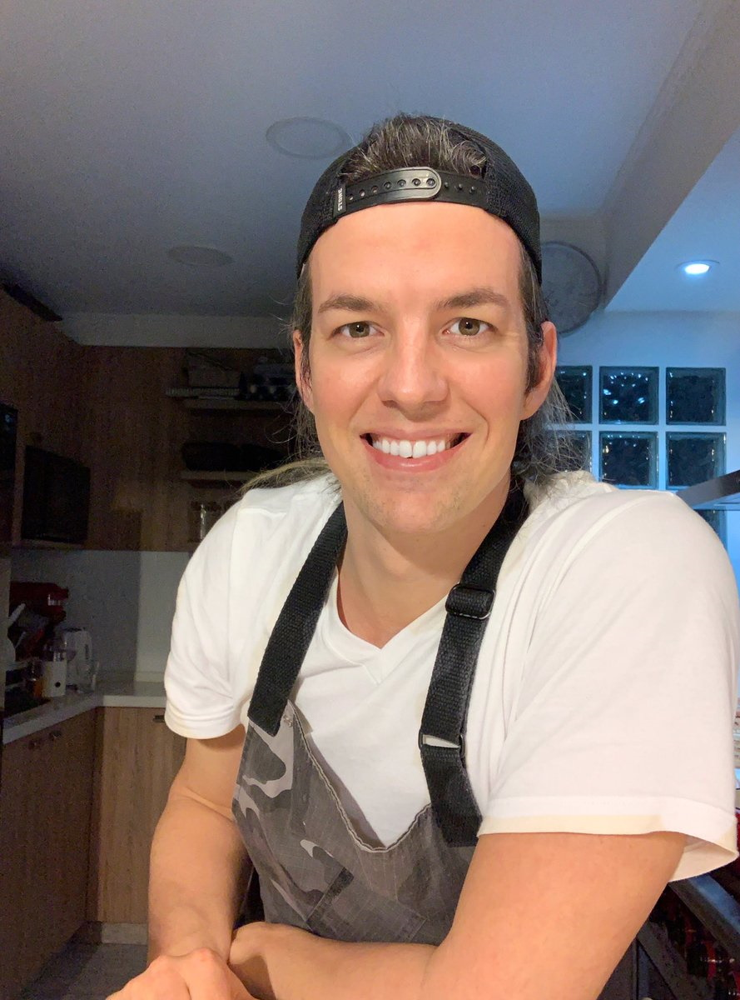
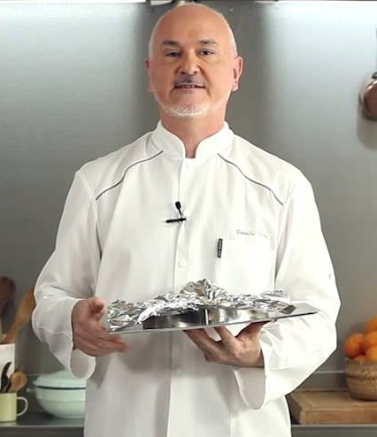
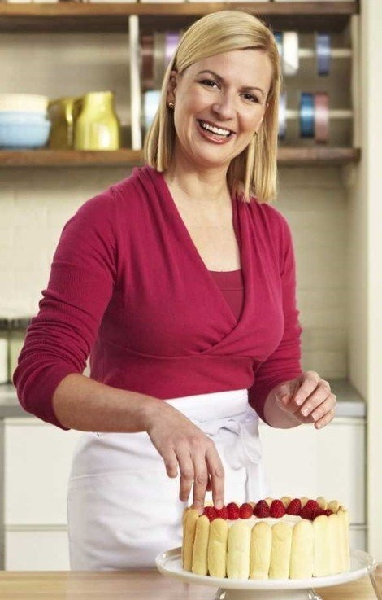
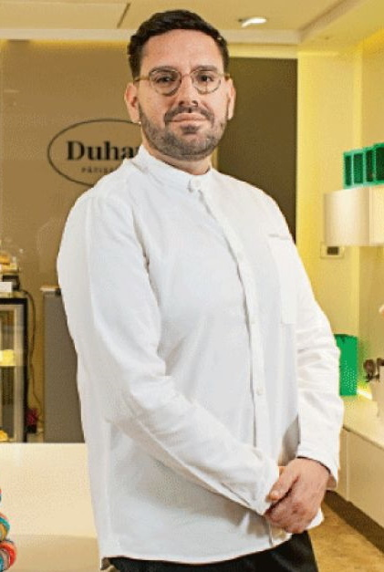

Comparto con ustedes mis pasteleros favoritos

Pedro Lambertini
Cocinero argentino, dedicado a la comida natural y orgánica, especialmente pastelería. Ha conducido distintos programas de televisión, entre ellos Alemania.
Perfil Instagram

Osvaldo Gross
Licenciado en geoquímica y chef pâtissier argentino. Es un destacado pastelero a nivel mundial y muy conocido por sus ciclos televisivos tanto en Utilísima Satelital como en elgourmet.com.
Perfil Instagram

Anna Olson
Reside en Welland en la región de Niágara de Ontario, Canadá. Fue la presentadora de Food Network Canada's Fresh con Anna Olson, Sugar and Kitchen Equipped y Hornear con Anna Olson.
Perfil Instagram

Damian Betular
Chef principal del hotel Palacio Duhau Park Hyatt Buenos Aires y el chef de pastelería ejecutivo de Duhau Pâtisserie, recientemente jurado en Masterchef y Bake Off Argentina.
Perfil Instagram